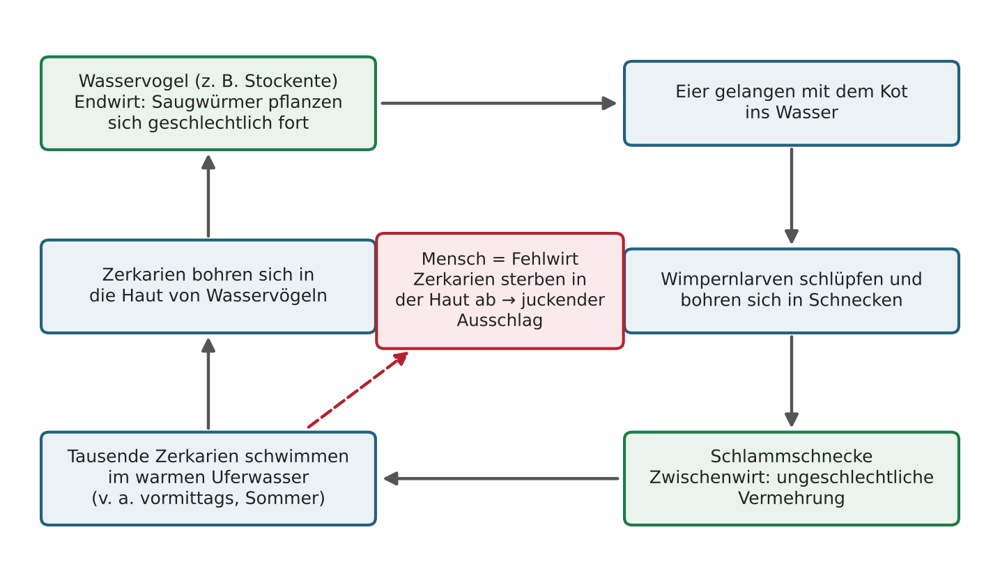

So nutzen Sie die Hilfen: Versuchen Sie es erst allein. Öffnen Sie dann Hilfe 1, danach Hilfe 2. Die Lösung dient zur Kontrolle – vergleichen Sie sie mit Ihrer eigenen Antwort und verbessern Sie diese im Hefter oder im PDF.
Aufgabe 1: Wer nützt wem?
- Ordnen Sie die Beziehungen den Begriffen Parasitismus, Symbiose oder Räuber-Beute-Beziehung zu und kennzeichnen Sie Nutzen (+) und Schaden (–) für beide Partner!
Hilfe 1
Fragen Sie jeweils: Hat Partner 1 einen Vorteil? Hat Partner 2 einen Vorteil oder Nachteil? Stirbt Partner 2 dabei?
Hilfe 2
Räuber töten ihre Beute, Parasiten ihren Wirt meist nicht.
Lösung (erst nach eigenem Versuch öffnen!)
Zecke – Mensch: Parasitismus (+/–). Pilz – Alge: Symbiose (+/+). Honigbiene – Apfelblüte: Symbiose (+/+; Nektar gegen Bestäubung). Hecht – Rotauge: Räuber-Beute (+/– , Beute stirbt). Bandwurm – Mensch: Parasitismus (+/–). Darmbakterien – Mensch: Symbiose (+/+). Mistel – Apfelbaum: Parasitismus (+/–; die Mistel entzieht dem Baum Wasser und Mineralsalze). Hallimasch – Fichte: Parasitismus (+/–). Pilz – Baumwurzel: Symbiose (+/+; der Baum erhält Wasser und Mineralsalze, der Pilz Zucker).
Aufgabe 2: Malaria – ein Parasit mit zwei Wirten
- Beschreiben Sie den Entwicklungszyklus des Malariaerregers mithilfe von Abb. 4!
- Begründen Sie, warum der Mensch der Zwischenwirt und die Anopheles-Mücke der Endwirt ist!
- Erklären Sie die periodischen Fieberschübe!
- Sie reisen im Sommer nach Ghana. Leiten Sie aus der Lebensweise der Anopheles-Mücke und des Erregers Schutzmaßnahmen ab und begründen Sie diese!
Hilfe 1
b) Wo findet die geschlechtliche, wo die ungeschlechtliche Fortpflanzung statt? c) Was passiert gleichzeitig in vielen roten Blutzellen? d) Wann stechen die Mücken? Wo legen sie ihre Eier ab?
Hilfe 2
d) Zwei Ansätze: Stiche verhindern (Expositionsprophylaxe) und den Erreger im Körper unschädlich machen (Chemoprophylaxe). Vergessen Sie nicht die Dämmerung.
Lösung (erst nach eigenem Versuch öffnen!)
a) Beim Stich einer infizierten Anopheles-Mücke gelangen Sporozoiten ins Blut und wandern in die Leber. Dort vermehren sie sich ungeschlechtlich zu Merozoiten, die rote Blutzellen befallen, sich darin vermehren und die Zellen zum Platzen bringen. Einige Merozoiten werden zu Vorstufen von Geschlechtszellen. Sticht eine Mücke den Erkrankten, nimmt sie diese auf; im Mückendarm findet die geschlechtliche Fortpflanzung statt. Neue Sporozoiten wandern in die Speicheldrüse der Mücke und werden beim nächsten Stich übertragen.
b) Im Menschen vermehren sich die Plasmodien nur ungeschlechtlich – er ist Zwischenwirt. In der Mücke findet die geschlechtliche Fortpflanzung statt – sie ist der Endwirt.
c) Die Plasmodien vermehren sich in vielen roten Blutzellen gleichzeitig und lassen sie im gleichen Rhythmus platzen. Dabei werden Merozoiten und Stoffwechselprodukte freigesetzt, die das Immunsystem aktivieren und Fieber auslösen.
d) Da die Mücken in der Dämmerung und nachts stechen: unter einem insektizidbehandelten Moskitonetz schlafen, abends lange, helle Kleidung tragen, Repellents auf freie Haut auftragen, Fliegengitter nutzen. Stehende Gewässer (Brutplätze) meiden bzw. abdecken. Vor der Reise ärztlich beraten lassen und ggf. Medikamente zur Vorbeugung einnehmen. Bei Fieber auch Wochen nach der Reise sofort zum Arzt und von der Reise berichten.
b) Im Menschen vermehren sich die Plasmodien nur ungeschlechtlich – er ist Zwischenwirt. In der Mücke findet die geschlechtliche Fortpflanzung statt – sie ist der Endwirt.
c) Die Plasmodien vermehren sich in vielen roten Blutzellen gleichzeitig und lassen sie im gleichen Rhythmus platzen. Dabei werden Merozoiten und Stoffwechselprodukte freigesetzt, die das Immunsystem aktivieren und Fieber auslösen.
d) Da die Mücken in der Dämmerung und nachts stechen: unter einem insektizidbehandelten Moskitonetz schlafen, abends lange, helle Kleidung tragen, Repellents auf freie Haut auftragen, Fliegengitter nutzen. Stehende Gewässer (Brutplätze) meiden bzw. abdecken. Vor der Reise ärztlich beraten lassen und ggf. Medikamente zur Vorbeugung einnehmen. Bei Fieber auch Wochen nach der Reise sofort zum Arzt und von der Reise berichten.
Aufgabe 3: Zecken – Parasiten vor der Haustür
- Ordnen Sie den Holzbock als Ekto- oder Endoparasit ein und begründen Sie Ihre Zuordnung!
- Die Zecke selbst ist für den Menschen ungefährlich. Erläutern Sie, warum Zeckenstiche trotzdem gefährlich sein können!
- Leiten Sie aus der Lebensweise der Zecke Verhaltensregeln für einen Ausflug in Wald und Wiese ab!
Hilfe 1
b) Was überträgt die Zecke? c) Wo sitzt die Zecke, wo sticht sie, wie lange saugt sie?
Hilfe 2
c) Denken Sie an Kleidung, Mittel auf der Haut, das Absuchen danach, das Entfernen und an die Impfung.
Lösung (erst nach eigenem Versuch öffnen!)
a) Ektoparasit: Der Holzbock lebt auf der Körperoberfläche des Wirts und saugt von außen Blut.
b) Die Zecke ist ein Vektor: Sie überträgt beim Saugen Krankheitserreger wie FSME-Viren und Borrelien, die schwere Erkrankungen (Hirnhautentzündung, Borreliose) auslösen können.
c) Geschlossene Kleidung tragen (lange Hose, Socken über die Hosenbeine), hohes Gras und Unterholz meiden, Repellent auftragen; nach dem Ausflug den Körper gründlich absuchen (Kniekehlen, Leiste, Achseln, Haaransatz); eine Zecke sofort mit Pinzette oder Zeckenkarte hautnah greifen und herausziehen, die Stelle desinfizieren und beobachten (Wanderröte → Arzt); FSME-Impfung, da Unterfranken Risikogebiet ist.
b) Die Zecke ist ein Vektor: Sie überträgt beim Saugen Krankheitserreger wie FSME-Viren und Borrelien, die schwere Erkrankungen (Hirnhautentzündung, Borreliose) auslösen können.
c) Geschlossene Kleidung tragen (lange Hose, Socken über die Hosenbeine), hohes Gras und Unterholz meiden, Repellent auftragen; nach dem Ausflug den Körper gründlich absuchen (Kniekehlen, Leiste, Achseln, Haaransatz); eine Zecke sofort mit Pinzette oder Zeckenkarte hautnah greifen und herausziehen, die Stelle desinfizieren und beobachten (Wanderröte → Arzt); FSME-Impfung, da Unterfranken Risikogebiet ist.
Aufgabe 4: Darmbakterien und Milchsäurebakterien
- Nennen Sie drei Leistungen der Darmbakterien für den Menschen!
- Erklären Sie, warum während oder nach einer Antibiotikatherapie häufig Durchfall auftritt!
- Erklären Sie, warum Sauerkraut monatelang haltbar ist, obwohl es nicht gekocht wird!
- Begründen Sie, dass es sich bei der Beziehung zwischen Mensch und Darmbakterien um eine Symbiose handelt!
Hilfe 1
b) Antibiotika wirken gegen Bakterien – unterscheiden sie zwischen „guten“ und „schlechten“? c) Was produzieren die Milchsäurebakterien? Was bewirkt das?
Hilfe 2
b) Wenn die Darmflora geschädigt ist, fehlt die Platzhalterfunktion und der Abbau von Ballaststoffen.
Lösung (erst nach eigenem Versuch öffnen!)
a) z. B. Abbau von Ballaststoffen (kurzkettige Fettsäuren für die Darmschleimhaut), Bildung von Vitaminen (v. a. Vitamin K), Training des Immunsystems, Schutz vor Krankheitserregern durch Platzhalterfunktion.
b) Antibiotika töten nicht nur die Krankheitserreger, sondern auch viele nützliche Darmbakterien. Die Verdauung von Ballaststoffen und die Wasseraufnahme im Darm sind gestört; außerdem können sich nun unempfindliche, schädliche Bakterien ausbreiten, weil die Platzhalter fehlen. Folge: Durchfall.
c) Milchsäurebakterien bauen den Zucker im Kohl durch Milchsäuregärung zu Milchsäure ab. Der niedrige pH-Wert verhindert, dass sich Fäulnisbakterien und Krankheitserreger vermehren – das Lebensmittel wird konserviert.
d) Beide Partner haben einen Vorteil: Der Mensch erhält Vitamine, Schutz vor Erregern und Hilfe bei der Verdauung; die Bakterien erhalten einen warmen, feuchten, nährstoffreichen Lebensraum (+/+).
b) Antibiotika töten nicht nur die Krankheitserreger, sondern auch viele nützliche Darmbakterien. Die Verdauung von Ballaststoffen und die Wasseraufnahme im Darm sind gestört; außerdem können sich nun unempfindliche, schädliche Bakterien ausbreiten, weil die Platzhalter fehlen. Folge: Durchfall.
c) Milchsäurebakterien bauen den Zucker im Kohl durch Milchsäuregärung zu Milchsäure ab. Der niedrige pH-Wert verhindert, dass sich Fäulnisbakterien und Krankheitserreger vermehren – das Lebensmittel wird konserviert.
d) Beide Partner haben einen Vorteil: Der Mensch erhält Vitamine, Schutz vor Erregern und Hilfe bei der Verdauung; die Bakterien erhalten einen warmen, feuchten, nährstoffreichen Lebensraum (+/+).
Basiswissen: Prokaryot oder Eukaryot?
- Ordnen Sie den Malariaerreger (Plasmodium) und ein Milchsäurebakterium den Prokaryoten bzw. Eukaryoten zu und nennen Sie drei Unterschiede im Zellbau!
Hilfe 1
Plasmodien sind Protozoen (Einzeller mit Zellkern).
Hilfe 2
Unterschiede: Zellkern, membranumhüllte Zellorganellen (z. B. Mitochondrien), Größe, Ribosomen, Form der DNA.
Lösung (erst nach eigenem Versuch öffnen!)
Plasmodium ist ein Eukaryot, das Milchsäurebakterium ein Prokaryot. Unterschiede: Eukaryoten besitzen einen Zellkern, Prokaryoten nicht (DNA frei im Cytoplasma als Bakterienchromosom, oft zusätzlich Plasmide); Eukaryoten haben membranumhüllte Zellorganellen wie Mitochondrien und ER, Prokaryoten nicht; Eukaryotenzellen sind meist deutlich größer (ca. 10–100 µm statt 1–10 µm); Prokaryoten haben kleinere Ribosomen (70S statt 80S).
Wahlaufgabe W1: Der Saugwurm in der Schnecke
- Geben Sie End- und Zwischenwirt an und erklären Sie die Vorteile dieses Wirtswechsels und des veränderten Aussehens der Schnecke für den Parasiten!
Hilfe 1
Wie wahrscheinlich ist es, dass ein einzelnes Ei in den richtigen Wirt gelangt?
Hilfe 2
Ungeschlechtliche Vermehrung im Zwischenwirt vervielfacht die Larven; die Fühler wirken wie Raupen.
Lösung (erst nach eigenem Versuch öffnen!)
Endwirt: Singvogel (geschlechtliche Fortpflanzung); Zwischenwirt: Bernsteinschnecke (ungeschlechtliche Vermehrung). Die Wahrscheinlichkeit, einen passenden Wirt zu erreichen, ist gering. Durch die ungeschlechtliche Vermehrung im Zwischenwirt entstehen sehr viele Larven, sodass trotzdem genug den Endwirt erreichen. Die auffälligen, pulsierenden Fühler sehen aus wie Raupen und locken Singvögel an – so gelangen die Larven gezielt in den Endwirt.
Wahlaufgabe W2: Die Asiatische Tigermücke in Bayern
- Erläutern Sie, welche Rolle der Klimawandel bei der Ausbreitung spielen könnte, und leiten Sie Maßnahmen für Gartenbesitzer ab!
- Beurteilen Sie, ob die Tigermücke derzeit ein großes Gesundheitsrisiko in Bayern ist!
Hilfe 1
Die Mücke ist wechselwarm – was bedeuten mildere Winter und heißere Sommer?
Hilfe 2
Ein Vektor ist nur gefährlich, wenn auch Erreger vorhanden sind.
Lösung (erst nach eigenem Versuch öffnen!)
a) Mildere Winter und wärmere Sommer verbessern die Überlebens- und Vermehrungsbedingungen der wärmeliebenden Mücke; ihr Toleranzbereich wird in Bayern häufiger erreicht. Maßnahmen: keine offenen Wasseransammlungen (Regentonnen abdecken, Untersetzer leeren, Gießkannen umdrehen), Funde den Behörden melden.
b) Derzeit ist das Risiko gering, da in Deutschland bisher kaum mit Erregern infizierte Mücken vorkommen; Erreger müssten erst z. B. durch Reisende eingeschleppt werden. Mit zunehmender Ausbreitung und Reiseverkehr könnte das Risiko steigen – deshalb ist Vorbeugung sinnvoll.
b) Derzeit ist das Risiko gering, da in Deutschland bisher kaum mit Erregern infizierte Mücken vorkommen; Erreger müssten erst z. B. durch Reisende eingeschleppt werden. Mit zunehmender Ausbreitung und Reiseverkehr könnte das Risiko steigen – deshalb ist Vorbeugung sinnvoll.
Wahlaufgabe W3: Probiotischer Joghurt
- Beurteilen Sie die Werbeaussage!
Hilfe 1
Was spricht für, was gegen die Aussage?
Hilfe 2
Was ernährt die eigenen Darmbakterien?
Lösung (erst nach eigenem Versuch öffnen!)
Die Aussage ist übertrieben: Viele Milchsäurebakterien werden im sauren Magen abgetötet, die übrigen siedeln sich meist nicht dauerhaft an. Eine allgemeine Stärkung der Abwehr ist bei Gesunden nicht nachgewiesen. Joghurt ist trotzdem ein gesundes Lebensmittel; in bestimmten Fällen (z. B. nach Antibiotika) können Probiotika möglicherweise helfen. Wirksamer für eine gesunde Darmflora ist eine ballaststoffreiche Ernährung (Gemüse, Vollkorn, Hülsenfrüchte).
Sichern: Fachsprache und Denkfallen
Erst selbst erklären, dann kontrollieren. Übernehmen Sie die Begriffe in Ihr Glossar.
Fachbegriffe: Kontrollieren Sie Ihre Erklärungen mit der Übung „Fachbegriffe zuordnen – Kontrolle Modul 5“ im mebis-Kurs.
Lösung: Denkfallen
- „Ein „erfolgreicher“ Parasit tötet seinen Wirt möglichst schnell.“ – falsch – Stirbt der Wirt, verliert der Parasit seine Nahrungsquelle und seinen Lebensraum. Viele Parasiten schädigen ihren Wirt deshalb nur mäßig.
- „Malaria wird durch ein Virus ausgelöst, das Mücken übertragen.“ – falsch – Malaria wird durch Plasmodien ausgelöst, einzellige Eukaryoten (Protozoen). Die Anopheles-Mücke ist Endwirt und Überträger.
- „Bakterien im Körper sind grundsätzlich schädlich.“ – falsch – Die meisten Bakterien in und auf unserem Körper sind harmlos oder nützlich (Darmflora, Hautflora, Scheidenflora).
Gutachten · Befund Kapitel 5
Ein Sommer am Steinbachsee – Kapitel 5: „Juckende Pusteln nach dem Baden“
- Was sind Zerkarien? Ordnen Sie Wasservogel, Schlammschnecke und Mensch die Begriffe Endwirt, Zwischenwirt und Fehlwirt zu.
- Warum können sich die Zerkarien im Menschen nicht weiterentwickeln?
- Nennen Sie drei Schutzmaßnahmen für Badegäste und begründen Sie sie mit der Lebensweise des Parasiten (Abb. 1 im Gutachten, S. 2).
Tipp
Lesen Sie das Kapitel 5 des Gutachtens noch einmal und suchen Sie in den Pflichtaufgaben dieses Moduls die passenden Fachbegriffe.

Lösung (erst nach eigenem Versuch öffnen!)
- Zerkarien sind Larven von Saugwürmern. Endwirt: Wasservögel (z. B. Enten), in ihnen pflanzen sich die Würmer geschlechtlich fort. Zwischenwirt: Schlammschnecken, in ihnen vermehren sich die Larven ungeschlechtlich. Mensch: Fehlwirt.
- Die Zerkarien bohren sich in die Haut, werden aber vom Immunsystem erkannt und sterben dort ab, bevor sie in die Blutgefäße gelangen. Die Entzündungsreaktion verursacht den Juckreiz. Im Menschen findet keine Fortpflanzung statt.
- Nicht im flachen, warmen, pflanzenreichen Uferbereich baden (dort leben die Schnecken und Zerkarien), lieber vom Steg ins tiefere Wasser; nach dem Baden sofort abduschen und kräftig abtrocknen (Zerkarien dringen erst beim Verdunsten des Wasserfilms ein); Enten nicht füttern (Endwirte werden sonst angelockt); Badezeit am Vormittag meiden (dann schwärmen besonders viele Zerkarien aus).